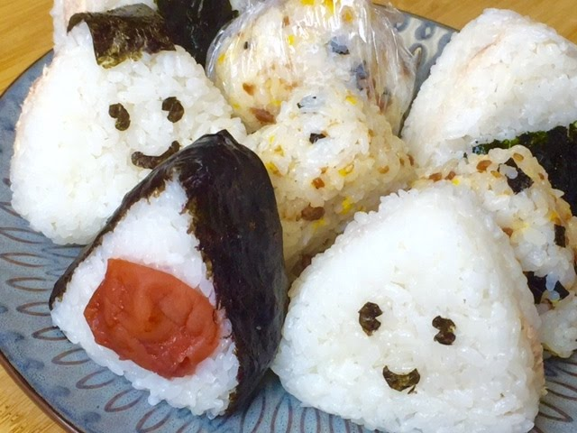

Onigiri recipe

Nutrition Facts
Per Serving:
744 calories; protein 14.4g; carbohydrates 159.4g; fat 3.3g; sodium 160.4mg. Full Nutrition.
Ingredients:
- 4 cups uncooked short-grain white rice
- 5½ cups water, divided
- ¼ teaspoon salt
- ¼ cup bonito shavings (dry fish flakes)
- 2 sheets nori (dry seaweed), cut into 1/2-inch strips
- 2 tablespoons sesame seeds